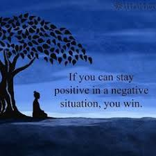
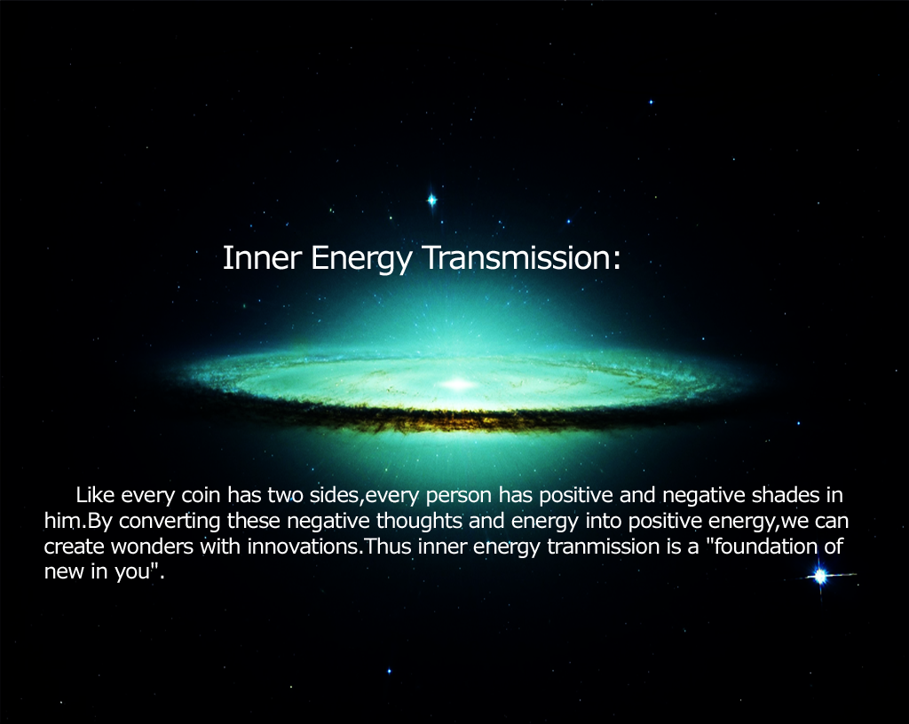

Stop Complaining, Start Problem-Solving
If you don’t like the way something is, change it. You may not be able to control all the things that happen to you but you can control the way you react.
We each have the power to consider a positive outlook in an otherwise non-positive situation. Life is not always easy and often presents us with many challenges. The key is to spin a problem by finding a solution.
Recently got laid off? It’s normal to feel scared, ashamed, or even angry. But these emotions will lead to a downward spiral, sucking your energy dry.
Instead, take it as an opportunity to go after your dream job. Rather than focusing on the negative aspects, find one reason to be positive.
It’s easy to blame yourself when something goes wrong or to believe the worst is going to happen. Learning not to be your own worst enemy will combat negative self-talk.
Positive thinking can increase your lifespan, decrease stress, and promote wellbeing. This mindset also helps to learn better-coping skills in life.
If a problem seems too overwhelming, consider it from a different perspective. Look to make small changes that will lead to big impacts on your life.
Think Less of Yourself and More of Others
Selfless acts are of one of the easiest ways to turn a negative outlook around. Good deeds evoke positive change in your life and the universe.
Start small by helping at a local homeless shelter. Or organize a canned food drive in your neighborhood. Help a friend in need by listening and providing support.
Karma rewards those who give back to others. By paying it forward is a cycle that makes the world a better place.
Being selfless also makes you more grateful for what you have in your life. Those who practice good faith lead happier lives.
Work Hard Without Expectations
When it comes to your job, it’s important to strive for personal greatness. Set individual career goals rather than only trying to please upper management.
Your work ethic speaks volumes about your character. Yet, when clocking in long hours, be sure you’re doing it for yourself. It’s only a bonus when your boss notices.
Setbacks in the workplace happen. But having a good attitude and perseverance will keep negativity at bay. The most successful people fail 10 times to succeed once, which is all that counts.
To keep energy thriving, it’s best not to see job satisfaction in dollar signs. But personal growth and development instead.
This outlook can lead to one day becoming your own boss. Here are the steps to follow to reach successful entrepreneurship.
It’s also important to know when to take a step back. Everyone needs time to relax, unwind, and unplug. A proper work-life balance will keep you from getting burned out.
Stop Comparing Yourself to Others
Are you always sizing yourself up to others? Their homes, their husbands, their careers, and their physical attractiveness? It’s a sure way to let negative energy into your life.
88% of women compare themselves to what they see in the media. These social comparisons can leave you feeling jealous and inadequate. They can create negative illusions about yourself that eat at your wellbeing.
The media tells us that we are not good enough on our own. That we need to buy this or change that to become a better version of ourselves. We pay more attention to gaining “likes” on social media rather than our own level of happiness.
But the truth is that we only need to change our state of mind. The only approval you should be seeking is your own.
To enhance energy, spend less time looking for likes and more time living life. Find inspiration in nature, novels, and relationships with others. Not tangible and superficial items.
You Attract What You Focus On
The law of attraction gives people the power to manifest their own futures. What you think, you become. Be sure you’re avoiding these 5 obstacles that interfere with the law of attraction.
Focus on the things you want in life and harness your inner power to make them come to life. It takes the power of the mind and actions to reach your personal destiny.
In life, you’ll often cross paths with manipulators, downers, and boasters. Take a good hard look at the people you surround yourself with. Let go of those who drain your positive energy or try to damper it.
With positive thinking, you attract other positive people into your life. You create an inner circle of people who bring out the best in you.
Be more mindful of your daily thoughts and emotions. Keep a journal and log what actions and people cause a positive change in emotion. Tune out negative comments, distractions, and let go.
If feeling foggy or unclear, meditate on it. A morning practice can clear your body and mind of toxins and negative energy, allowing you to focus on achieving daily goals.
Laugh Loud and Often
Laughter releases endorphins and happy hormones. This makes it easier to have a sunny disposition in life. It’s also contagious, so you can spread good vibes all around.
Be social and find humor in yourself and others. Make plans with family, friends, and work colleagues. If feeling low, watch a funny show on Netflix or get tickets to a comedy club.
Laughter should also be present in your love life. Find the one that makes you smile, it will keep positive vibes flowing.
Life events and everyday stressors can take a toll on happiness levels. If tragedy strikes in life, take time to heal but move on. Find the happiness within and radiate.
Be present in everything you do. It’s one of the best positive energy quotes to live by. It forces you to step back and enjoy little moments in life.
Change Your Lifestyle with Positive Energy
Positive energy has the power to change your happiness, wellbeing, and self-worth.
It can free your spirit, mind, and body.

Monitor Your Thoughts and Words. You'll be amazed at the thoughts that pop into your head.
Make a Gratitude List. Write a list of the things you are thankful for. When you find yourself wanting
to complain, focus on what you are grateful for instead.
Take a Thank-You Walk. While you're walking, think of all the things you are grateful for. Carry this
sense of gratitude with you throughout the day.
Focus on the Good Stuff. Focus on what is right in your life. Praise others instead of criticizing them.
Focus on what you get to do rather than what you have to do.
Start a Success Journal. Write down all the great interactions and accomplishments you have had today.
Let Go. Make a list of the things you would like to complain about. Identify the things that you have
the power to change, and identify those things that are beyond your control. For the former, identify possible
solutions and a possible action plan. Write the word surrender next to the items on your list that are beyond
your control.
Breathe. Spend 10 minutes in silence. Focus on your breathing while praying or meditating and transform
stress into positive energy. Throughout the day, anytime you find yourself feeling stressed or wanting to complain,
stop for 10 seconds and breathe. Count your breaths and count your blessings.